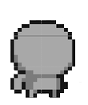
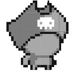
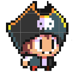

1. Esclarecendo as Coisas
Como a imagem mostra, pixel arts são feitas com um número limitado de traços e cores e, principalmente agora no inicio, iremos trabalhar somente com sprites e não com cores. Para praticar o onde colocar os pixels o proprio estilo de desenho. Não iremos conseguir fazer as imagens mostradas no começo ainda ... AINDA.
2. Criar a Base
Primeiro você deve criar uma base de como você quer o seu personagem. Modelando princinpalmente o corpo. Detalhes como roupas, o rosto ou qualquer coisa do tipo iremos fazer no proximo passo.
3. Dar personalidade
Depois você irá colocar na sua base as características principais do personagem, aquilo que da o carater/personalidade à dele. Nesse exemplo foi o chapeu de pirata, mas poderia ser o cabelo, ou um escudo, ou até um bigode like estilo mario. Essas características, que dão vida e personalidade ao personagem, são geralmente aquelas de maior destaque que irão sobrepor a base feita anteriormente.
4. Colocando as "cores" e os pixels
Agora você pode colocar os outros detalhes do personagem seguindo para a aparencia do rosto, as roupas e talvez algum acessório. Use as cores mais escuras para desenhar o que você quer, preencha com as mais claras e use as mais escuras param fazer efeitos de sombras ou só regiões que você quer que fiquem mais escuras mesmo.
5. Tente colorir
Eu falei que nos não iriamos trabalhar com cores, mas se você estiver se sentido confiante e esta pronto para se sentir frustrado
acha que consegue indentificar onde aplicar as cores e quais uzar, vá em frente. Você deve se limitar a usar poucas cores, por que se não
seu sprite ficará muito colorido e chamtivo. Escolha cores, principalmente, monocromaticas que possa perceber uma progressão, um aumento na
tonalidade dela.